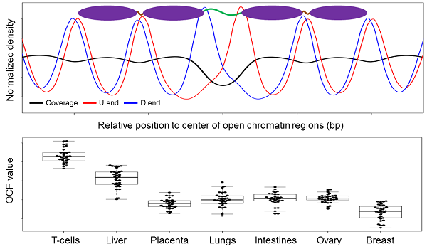

- Computational biology and bioinformatics
- LncRNA identification and functional study
- DNA methylation biomarkers in cancers and diseases
- Noninvasive prenatal/cancer testing using plasma DNA analysis
- Data mining and visualization
Research highlights
- Trace the tissue origin of the tumor through liquid biopsy Sun et al. Genome Res 2019 Mar; 29(3):418-427.
- CfDNA cutting scheme explains the shortness of fetal DNA Sun et al. PNAS 2018 May 29; 15(22):E5106-E5114.
- Extra-fast and accurate lncRNA classification Sun et al. BMC Genomics 2013, 14(Suppl 2):S7.
- Identification and functional annotation of Linc-Yy1 gene Zhou et al. Nat Commun 2015 Dec 11; 6:10026.
- Functional annotation of Yy1 transcription factor during myogenesis Lu et al. EMBO J 2013 Oct 2; 32(19):2575-88.

Sun et al. PNAS 2015 Oct 6; 112(40):E5503-12.

Research Assistant Professor (faculty), The Chinese University of Hong Kong, 2017-current
Postdoctoral fellow, The Chinese University of Hong Kong, 2014-2017
- I work on noninvasive prenatal testing and cancer diagnosis methods by plasma DNA analysis
under the supervision of
Prof. Dennis Lo (卢煜明) and
Prof. Rossa Chiu (赵慧君).
- I have participated in collaborative projects with Prof. Miguel Esteban (GIBH), and Prof. Ping Hu (胡萍; SIBCB) providing bioinformatics supports.
Doctoral thesis, The Chinese Unviersity of Hong Kong, 2010-2014
- I have participated in many biological, clinical and computational projects.
I have analyzed a large amount of NGS data using ChIP-seq, RNA-seq and BS-seq technology
and published several bioinformatics software in DNA methylation and lincRNA field.
- I have participated in writing grant proposals for HKRGC and NSFC with Prof. Hao Sun (孙昊), Prof. Huating Wang (王华婷), and Prof. Zhenguo Wu (邬振国; HKUST).
Bachelor thesis, Unviersity of Science and Techonology of China, 2006-2010
- National Students Innovative Project: Gesture interaction methods: an implementation based on FPGA,
wireless EMG sensors and accelerometers. Under supervision of
Prof. Xiang Chen (陈香),
I have designed/implemented a FPGA-based system for electromyography signal recognition and modelling.
- ABU Robocon 2010 (China Division) USTC team supervised by Prof. Fanrang Kong (孔凡让) and Prof. Hui Li (李辉). I'm the leader of the electronic circuit team and have designed/implemented most of the PCBs for our robots.